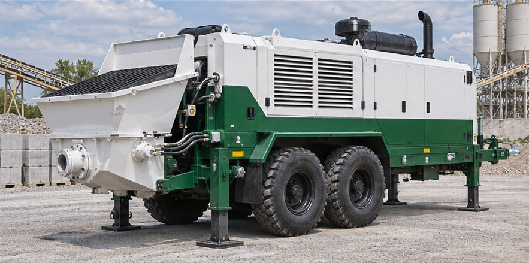

Concreto premezclado
Suministro por metro cúbico. Indícanos la resistencia especificada, el volumen y la fecha del colado.
TEPALCATES · IZTAPALAPA · CDMX
Coordina el suministro de concreto premezclado y el bombeo para tu próximo colado. Te ayudamos a estimar el volumen y elegir el equipo según el acceso, la distancia y la altura de descarga.
Cotizar mi coladoSERVICIOS
Suministro por metro cúbico. Indícanos la resistencia especificada, el volumen y la fecha del colado.
Estimamos el volumen de losas, zapatas, trabes y columnas a partir de las medidas del plano o croquis.
Bombeo estacionario por tubería y bombeo con pluma. Revisamos la ruta de descarga y el espacio de maniobra.
Consulta disponibilidad de equipos estacionarios y camiones con pluma para tu obra.
EQUIPOS

Bomba estacionaria
Ver ficha técnica
Bomba estacionaria
Ver ficha técnica
Bomba estacionaria
Ver ficha técnica
Bombeo con brazo articulado
BOMBAS EN VENTA
$390,000 MXN
Bomba para concreto de 1990. Equipo usado en buen estado según el anuncio. El vendedor indica que está lista para obra, admite pruebas y podría recibir un camión Freightliner M2 como parte de la negociación. Consulta opciones para obras foráneas.
Ubicación del anuncio
Gustavo A. Madero, Ciudad de México.
CONTACTO
Comparte la ubicación y fecha del colado, los metros cúbicos, la resistencia solicitada y la distancia o altura de bombeo.
Cotizar por WhatsApp 55 6295 9980 Contactar por FacebookAv. Central 95, Tepalcates, Iztapalapa, C.P. 09210, CDMXBomba estacionaria · Variante histórica de referencia
| Capacidad nominal de bombeo | 35 m³/h |
|---|---|
| Presión de bombeo | 60 bar |
| Potencia motriz | 38 kW |
| Peso operativo | 2.3 t |
| Diámetro del cilindro de bombeo | 180 mm |
| Carrera del pistón | 1,000 mm |
El caudal efectivo depende de la mezcla, la altura y el recorrido de la tubería. Confirma la variante y la configuración de la unidad con la placa del equipo.
Valores de referencia en LECTURA Specs
Catálogo de refacciones SCHWING (incluye BP 750 R)
Bomba estacionaria · Variante histórica de referencia
| Capacidad nominal de bombeo | 51 m³/h |
|---|---|
| Presión de bombeo | 59 bar |
| Potencia motriz | 51 kW |
| Peso operativo | 2.8 t |
| Diámetro del cilindro de bombeo | 180 mm |
| Carrera del pistón | 1,000 mm |
El caudal efectivo depende de la mezcla, la altura y el recorrido de la tubería. Confirma la variante y la configuración de la unidad con la placa del equipo.
Valores de referencia en LECTURA Specs
Catálogo de refacciones SCHWING BP 1000 RD-18
Bomba estacionaria · Variante histórica de referencia
| Capacidad nominal de bombeo | 87 m³/h |
|---|---|
| Presión de bombeo | 100 bar |
| Potencia motriz | 111 kW |
| Peso operativo | 5.0 t |
| Diámetro del cilindro de bombeo | 200 mm |
| Carrera del pistón | 1,600 mm |
El caudal efectivo depende de la mezcla, la altura y el recorrido de la tubería. Confirma la variante y la configuración de la unidad con la placa del equipo.
Valores de referencia en LECTURA Specs
Manual de operación SCHWING SIWA BP 2000 HDR-20